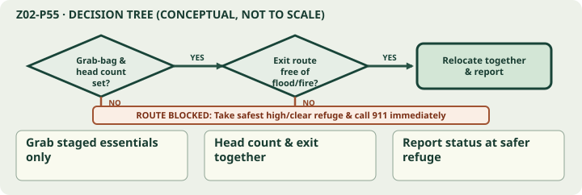

Z02-P55 · Shelter and housing · New manuscript
Execute safe shelter abandonment and relocate to higher-grade refuge
Leave a failing or threatened shelter swiftly, together and along a verified safe exit path.
When it applies · Forced departure from a collapsing, flooded, storm-threatened or CO-compromised shelter day or night.
Equipment · Staged headlamp, dry outer layer, footwear, communication device, emergency medications and map of pre-checked exit route.

Actions
- Grab only pre-staged essentials (light, warm/rain shell, footwear, phone/communicator, medications and safe water)—leave staked tents, sleeping pads and bulky camp gear behind if danger is imminent.[T13, T10, E02]
- Perform an immediate head count outside the shelter, put on lights and travel together along the pre-verified high-ground or clear road exit away from flood channels and snapping timber.[E11, E04, E13]
- Notify emergency services or your out-of-area contact once at the safer refuge, reporting your new location and any injuries or missing items.[T06, T11, T02]
Failure recognition · Scattering into the dark without a head count, or wading back through rising creek runoff to retrieve a tent and backpack.[E11, T07, T13]
Verify · Confirm all group members are accounted for at the higher-grade refuge, dry/protected and able to communicate status.[E11, T06, ED]
Stop or change course · Never cross flooded roads, downed power lines, active flames or unverified ice during relocation; if trapped by a sudden hazard, take the safest available high/clear refuge and call 911.[T07, C19, E12, T02]
Evidence and editorial notes
- C19 · FEMA / Ready.gov · Wildfires (current web edition)
- Section: Wildfires > Stay Safe and Smoke Protection · Conditions: Approaching wildfire or heavy smoke in camp or community
Support: Evacuate early along open routes per official orders, protect airways from heavy smoke, and avoid turning back into active fire corridors.
Limitations: Cloth face coverings do not filter fine wildfire smoke particles; fitted particulate respirators or clean indoor air are distinct interventions. · Conflicting evidence: None; coordinates with NWS-WILDFIRE.
Editorial note: Covers wildfire escape and smoke decision thresholds in Z01/Z03. · Specialist reviewer: Emergency management and fire safety
Primary source · checked 2026-11-24 - E02 · NPS · Ten Essentials (current web edition)
- Section: Navigation; insulation; emergency shelter; emergency food and water · Conditions: Outdoor trips; adjust kit to season and route
Support: Carry essential systems including navigation, insulation, light, water and emergency shelter.
Limitations: Carrying items without practice or cold-weather verification does not ensure readiness. · Conflicting evidence: None; baseline kit system architecture.
Editorial note: Supports failure-mode packing and kit verification cards. · Specialist reviewer: Field education and search and rescue
Primary source · checked 2026-11-24 - E04 · NWS · Flood Safety: Key Points for Camping and Hiking (agency PDF)
- Section: Before and during camping; know your surroundings · Conditions: Stream valleys and runoff channels subject to flash flooding
Support: Choose higher ground away from water channels. Rain far upstream can drive rapid flooding.
Limitations: Dry streambeds and gentle swales can flood rapidly without local rainfall. · Conflicting evidence: None; aligns with NWS-FLOOD.
Editorial note: Core hydrological exclusion rule for shelter placement. · Specialist reviewer: Emergency management and hydrology
Primary source · checked 2026-11-24 - E11 · NPS · Hike Smart (current web edition)
- Section: Plan your hike; Stay together · Conditions: Groups on hiking routes
Support: Choose a route suited to the group's abilities and hike at a pace that keeps the group together.
Limitations: Fast hikers moving ahead at junctions is a leading driver of preventable separation. · Conflicting evidence: None; aligns with SAR prevention principles.
Editorial note: Core reference for group accountability and pacing cards. · Specialist reviewer: Group leaders and search and rescue
Primary source · checked 2026-11-24 - E12 · Minnesota DNR · Ice Safety (current web edition)
- Section: Ice Safety > basic precautions · Conditions: Minnesota ice edges and travel routes
Support: No ice is universally safe. Strength can differ over short distances; appearance or tracks alone cannot establish a safe crossing.
Limitations: Currents, springs, snow insulation, and freeze-thaw cycles weaken ice invisibly. · Conflicting evidence: None; mandates shore-bound detour for foundational walking parties.
Editorial note: Maintains strict separation from specialized B013 ice chapters. · Specialist reviewer: Ice safety and search and rescue
Primary source · checked 2026-11-24 - E13 · USDA Forest Service · Hazard Tree Safety (agency PDF)
- Section: What You Can Do to Reduce Risk · Conditions: Forest campsites and stops
Support: Look for dead trees and falling material. Stay away from hazardous trees and move away when winds make the site unsafe.
Limitations: Internal decay and root rot can cause live-looking trees to fail in saturated soils or high wind. · Conflicting evidence: Does not specify a universal exclusion radius; tree height and slope govern fall reach.
Editorial note: Prevents false precision on fall-zone distance while requiring overhead screening. · Specialist reviewer: Land management and arboriculture safety
Primary source · checked 2026-11-24 - T02 · American Red Cross · First Aid Steps (current web edition)
- Section: First Aid Steps > Call 9-1-1 · Conditions: Lay emergency response to unresponsiveness, abnormal breathing or severe bleeding
Support: Activate EMS and get needed equipment. Follow dispatcher directions and act within training.
Limitations: Remote locations may delay EMS arrival, requiring sustained stabilization after activation. · Conflicting evidence: None; aligns with NPS-E.
Editorial note: Mandates early emergency activation and dispatcher adherence. · Specialist reviewer: EMS and wilderness medicine
Primary source · checked 2026-11-24 - T06 · NPS · Outdoor Emergency Plan (current web edition)
- Section: If you get lost or hurt; call for help · Conditions: Outdoor US emergency
Support: Communicate location, last known point, situation and needs. Stay put when unable to establish a safe route unless immediate danger requires movement.
Limitations: Cell signal is unreliable in backcountry terrain; pre-trip plans bridge communication gaps. · Conflicting evidence: None; core lost-person decision rule.
Editorial note: Foundation for stay/signal/move and dispatch handoff cards. · Specialist reviewer: Search and rescue
Primary source · checked 2026-11-24 - T07 · FEMA · Flood Hazard Information Sheet (agency PDF)
- Section: How to stay safe when a flood threatens; take an active role · Conditions: U.S. household flood preparedness and evacuation
Support: Prepare contacts, medication and supplies. Heed evacuation instructions and avoid flooded roads.
Limitations: Six inches of moving water can knock down an adult; shallow-looking crossings hide road washouts. · Conflicting evidence: None; aligns with NWS-FLOOD.
Editorial note: Supports flood turnaround and evacuation decision thresholds. · Specialist reviewer: Emergency management
Primary source · checked 2026-11-24 - T10 · FEMA / Ready.gov · People with Disabilities (current web edition)
- Section: People with Disabilities > Make a Plan and Build a Kit · Conditions: Individuals with mobility, sensory, medical, or power-dependent access and functional needs
Support: Build a personal support network, plan accessible evacuation transport, register voluntarily with local emergency registries where available, and plan backup power and spare supplies for medical devices, medications, and service animals.
Limitations: Local registry availability and utility priority-restoration policies vary by jurisdiction. · Conflicting evidence: None; extends generic preparedness plans to accessible requirements.
Editorial note: Directly addresses Z01 accessible emergency planning requirement. · Specialist reviewer: Accessible emergency management and disability preparedness
Primary source · checked 2026-11-24 - T11 · FEMA / Ready.gov · Make a Plan (current web edition)
- Section: Make a Plan > Family Emergency Communication Plan · Conditions: Households and traveling groups preparing for disruptions
Support: Record out-of-area contacts, local meeting places, medical/allergy summaries, and alternate communication channels (text vs voice) in paper and offline formats; practice the plan periodically.
Limitations: Cellular networks often congest during disasters while SMS or out-of-area contacts may still connect. · Conflicting evidence: None; complements outdoor trip-plan cards.
Editorial note: Anchors emergency communication protocols and group contingency plans. · Specialist reviewer: Emergency management and communications
Primary source · checked 2026-11-24 - T13 · FEMA / Ready.gov · Evacuation (current web edition)
- Section: Evacuation > Before, During, and After Evacuation · Conditions: Developing wildfire, flood, storm, or infrastructure emergency
Support: Identify multiple exit routes ahead of time, keep essential go-bags and fuel ready, leave promptly when authorities order evacuation, and do not return until officials declare the area safe.
Limitations: Late departure can trap groups behind road closures, smoke, or rising water. · Conflicting evidence: None; pairs with NWS-FLOOD and READY-WILDFIRE.
Editorial note: Establishes clear leave-early decision thresholds for multi-hazard scenarios. · Specialist reviewer: Emergency management
Primary source · checked 2026-11-24
Source lineage · Ready.gov evacuation, NWS flood and NPS emergency plan; new manuscript · Classification · New manuscript.